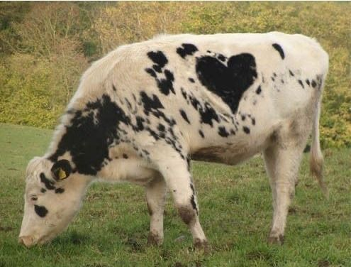
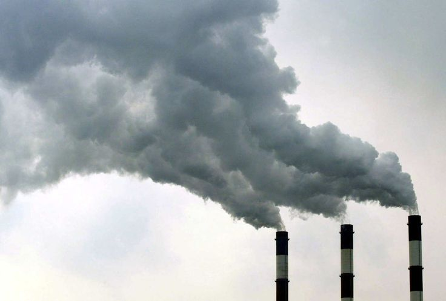
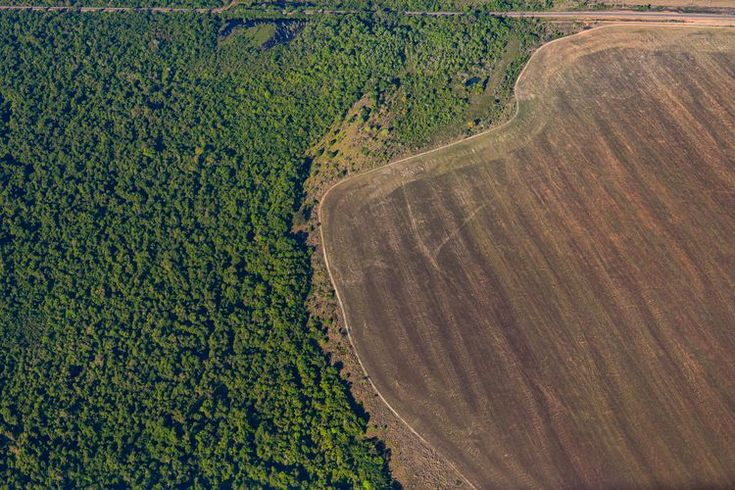

Cows and Agriculture are the largest source of methane emissions. Methane is a potent greenhouse gas that contributes to climate change. Cows produce methane when digesting their food, Methane traps more heat than carbon dioxide over a short period of time, The emissions from cows add up quicky and contribute significantly to global warming. Additionally, dairy farming requries large amounts of water and land, leading to deforestation and habitat loss. By choosing AI Milk, you can help reduce your carbon footprint and support a more sustainable future.

According to the Environmental Protection Agency (EPA), the average cow emits between 154 to 264 pounds of methane gas per year By reducing the demand for dairy products, we can help decrease the number of cows needed for milk production, which in turn reduces methane emissions and helps combat climate change.

Dairy farming requires large amounts of water and land. water is needed for cows to drink, to clean farms, and to grow feed crops, such as corn and soy. It is estimated that it takes roughly around 800 gallons of milk to 1,000 gallons of water to produce just one gallon of milk.
Additionally, the dairy cow herslef directly consumes about 4-5 gallons of water to produce one gallon of milk. Also to compare almond milk uses roughly 130 gallons per gallon produced, and oat milk uses about 48 gallons per gallon produced.
